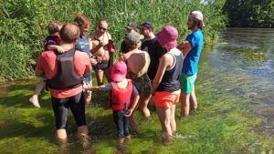
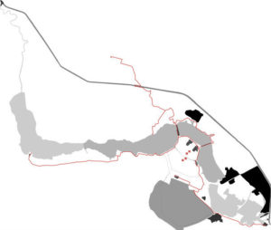
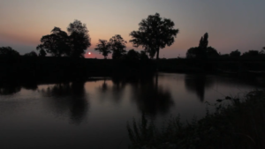
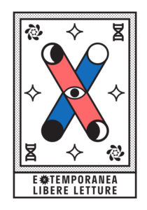

{#14} Parole di fiumi
ecosistemi, fiume, gosh, libere letture, Newsletter
In questo numero:
- Save the date: Streaming
- Min Cho
- Chés
- Orinoco
- Gange
- Giochi fluvialiCiao neh!
Fine Luglio. Anziché sommergervi con i soliti fiumi di parole, a questo giro di boa diamo la parola ai fiumi…
…ma prima dell’inondazione: Mercoledì 5 Agosto alle 18.00 non perdete la prima diretta streaming sul canale youtube Scienceground, con Rossella De Ceglie e Biagio Di Mauro a proposito di ecosistemi, Alexander Von Humboldt e “l’invenzione della natura”.

Qualche settimana fa, muniti di registratore ci siamo immersi nelle acque del Min Cho, e abbiamo fatto una scoperta senzazionale: come il mare di Solaris — l’esopianeta inventato da Stanisław Lem — anche il Min Cho è in grado di produrre mimoidi, asimmetriadi, e addirittura umanoidi!
Ne abbiamo intervistato uno:

Siamo sempre noi, quelli del fiume di cose che si chiama eXtemporanea. Abbiamo affluenti e canali vari, tipo il canale Telegram o questa newsletter torrenziale dalle piene imprevedibili. Potete aiutarci ad allargare il bacino condividendo il link d’iscrizione.
Se continuate a seguirci dopo tutto questo tempo, le opzioni sono due:
1) abbiamo instaurato un’amicizia;
2) ci state psicanalizzando (un po’ come faceva il pianenta Solaris — nell’interpretazione di Tarkovskij).
In entrambi i casi, non ci vergognamo a esprimere i più reconditi pensieri che questa gita ha portato a galla. E siccome è Luglio per tutti, un’immagine vale mille parole:

Ecco come vediamo il Min Cho dopo “il contatto”
Legenda:
Opere d’interesse idrico, in scala cromatica per grado di artificialità (fonte: Ing. Giò Marcafogli)
 Stabili con numero civico 24 (fonte: OpenStreetMaps)
Stabili con numero civico 24 (fonte: OpenStreetMaps)
Antica Via Fluminis

Chés
Una delle cose che stiamo imparando da Humboldt — e dagli umanoidi che si manifestano sul Min Cho — è che “tutto è connesso”: gli ecosistemi si somigliano e studiando un fiume si impara qualcosa di tutti i fiumi e non solo!
L’ha intuito ben prima di noi Arianna, che l’anno scorso leggendo il programma dei laboratori di Scienceground 1.5 ha pensato “se parlano dell’acqua del Mincio, magari sanno qualcosa anche del Chiese!”
Arianna è una delle volontarie di Festivaletteratura, è cresciuta sul Chiese e l’anno scorso ha collaborato con la Cineteca di Bologna e la regione Emilia Romagna a “un lavoro per presentare i problemi che questo fiume sta avendo e portare avanti anche un messaggio di speranza grazie a tutti coloro che stanno combattendo per salvarlo”. Dalla sua intuizione è nata una piccola intervista improvvisata a uno dei nostri ospiti che ha arricchito il bellissimo video che trovate a questo link — e che ci ha fatto molto piacere scoprire!

Orinoco
Dicevamo di quello che stiamo imparando da Humboldt e su Humboldt: a proposito di fiumi, già nei primissimi capitoli della biografia che stiamo leggendo si scopre di come a lui siano dovute alcune tra le prime raccolte sistematiche di informazioni su flora e fauna dell’Orinoco, il secondo fiume dell’America Meridionale per portata, e del Casiquiare, il braccio che ne connette il bacino idrografico con quello del Rio delle Amazzoni.
Le discussioni procedono ed è arrivato il momento della nostra prima diretta streaming!
A parlare con noi di ecosistemi, raccontando il loro lavoro, il loro pensiero e tutto quello che in qualche modo li lega all’avventuroso Humboldt ci saranno Rossella De Ceglie e Biagio di Mauro.
Rossella è ricercatrice di storia della scienza presso l’Università di Bari, e si sta occupando di antropocene. In particolare quest’anno ha tenuto un corso per la magistrale in scienze storiche in cui largo spazio è stato dato proprio ad Alexander Von Humboldt (e nella cui bibliografia figura proprio “L’invenzione della natura” di Andrea Wulf).
Biagio è un ricercatore del CNR (Istituto di Scienze Polari) che si occupa di geofisica, in particolare di ghiacciai alpini e del ruolo delle microalghe glaciali nella loro fusione. La raccolta e analisi dati in ecosistemi d’alta quota ne fanno – per così dire – un ricercatore “Humboldtiano” dei giorni nostri.
L’appuntamento è per Mercoledì 5 agosto alle 18. L’evento sarà trasmesso in diretta sul sul canale youtube di Scienceground e chiunque voglia intervenire proponendo domande o commenti può già farlo sul gruppo Telegram dedicato.

Gange
“Così venne instaurato l’ordine nella terra delle diciotto maree, con le sue due metà, quella selvaggia e quella coltivata, in perfetto equilibrio. Le cose andarono bene finché quell’ordine non venne sconvolto dall’avidità umana.”
Amitav Ghosh, “Il paese delle maree”
La seconda Libera Lettura ci porta a navigare il fiume indiano per eccellenza, il Gange o la Ganga (secondo l’induismo la Ganga è una divinità femminile). Stiamo infatti leggendo Il paese delle maree di Amitav Ghosh (Neri Pozza, 2005), ambientato proprio sul delta del fiume. Il romanzo ci serve come spunto per esplorare l’ecosistema fluviale e il rapporto tra umano e non-umano. Qui trovate il post sul nostro blog, con un’introduzione al testo e qualche spunto di riflessione. Se volete invece chiaccherare con noi del romanzo, ma anche di fiumi e di relazione tra umano e non-umano, unitevi al nostro gruppo Telegram.
Giochi fluviali
Il cadavere squisito dell’Algoritmo Umano
Il cadavre exquis è un gioco di parole, a sua volta una variazione di un divertissement grafico surrealista. Si tratta di un gioco dove ogni participante estende un testo con la sola conoscenza di un suo frammento. Nella nostra variazione, il frammento è scelto a caso nel corpo del testo, e la crescita del testo non è più lineare ma ad albero.
Puoi partecipare a questo Algoritmo Umano contribuendo con la tua frase! Qui:
http://fturci.eu.pythonanywhere.com
Che monstrum ci aspetta?
Rotte pindariche
In un racconto di John Cheever, il protagonista decide — per sfuggire alla noia di un pomeriggio di mezza estate — di tornare a casa via acqua: dal giardino di amici dove si trova gli basterà attraversare una quindicina di piscine private e una pubblica. In questi giorni di mezza estate che ci avvicinano a Festivaletteratura, vogliamo raccogliere lo spunto letterario per proporvi un gioco di immaginazione:
- prendete una qualsiasi mappa e individuate il punto A: quello in cui vi trovate ora
- indivituate il punto B: la città di Mantova
- ora immaginate di avere una barca in grado di navigare anche il più piccolo ruscello e, partendo da A, individuate un percorso che vi porti a B via fiume
- in alcuni casi vi potrà servire una capatina in mare… va bene lo stesso, l’importante è usare corsi d’acqua naturali
- inviateci la vostra rotta: per gli smanettoni l’ideale sarebbe mandarci un layer di GIS, per chi invece ama l’analogico le opzioni sono una descrizione scritta o disegnata via email o aggiunta a questo file — se oltre all’analogico amate l’anonimato!
Che ce ne facciamo? Rivelarlo adesso sarebbe come spoilerare il racconto di Cheever… ci limitiamo a dire che speriamo nello stesso finale — sempre metaforicamente eh!